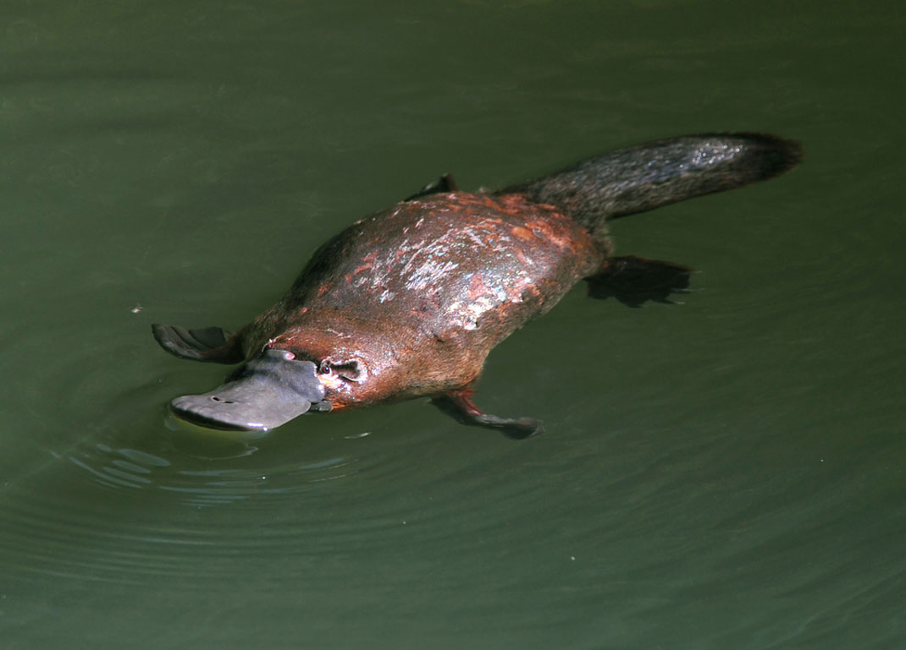
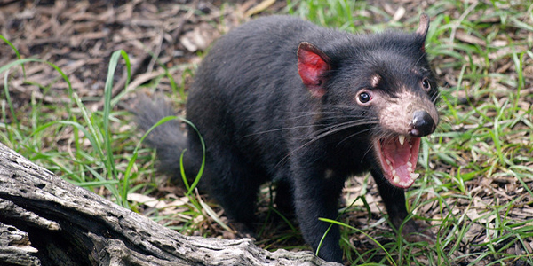

La faune d'Australie et de Tasmanie est très différente de celle des autres régions du monde.
Ses mammifères endémiques sont des marsupiaux, dont les petits se développent dans des poches ventrales, ou même des monotrèmes, qui pondent des œufs et allaitent leurs petits.
Les oiseaux, les reptiles, les insectes, les animaux marins de cette région, depuis longtemps séparée des autres continents, ont aussi leurs particularités.
Beaucoup d'espèces d'animaux australiens sont menacées, ou ont déjà disparu.
L'Australie a aussi des espèces d'importation récente, qui créent des déséquilibres biologiques auxquels il n'est pas facile d'apporter des solutions satisfaisantes et durables.
L'ornithorynque, mammifère amphibie venimeux et pourvu d'un bec de canard, pond des œufs :
De la taille d'un petit chien, le diable de Tasmanie est un mammifère. Il sait chasser, mais se nourrit essentiellement de charognes. Il a disparu du continent australien il y a environ 600 ans et on ne le trouve plus aujourd'hui qu'en Tasmanie.
